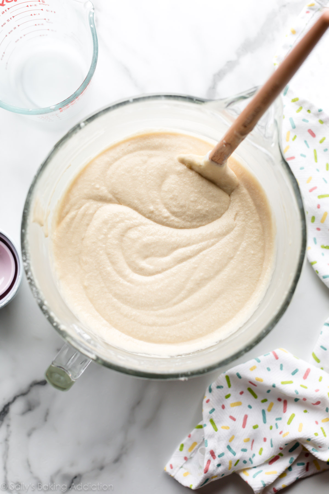
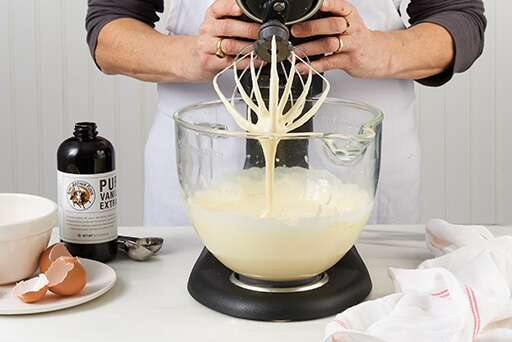

On this page I will supply the steps in order to make the BEST pound cake you’ve ever had!
This link takes you to home page!Steps Preheat oven to 350 degrees and spray pan; Cream butter and sugar in mixing bowl; Add eggs one at a time to mixing bowl; Add in flour slowly until combined; Pour batter into prepared pan; Bake in the oven for 1 ½ hours;
 